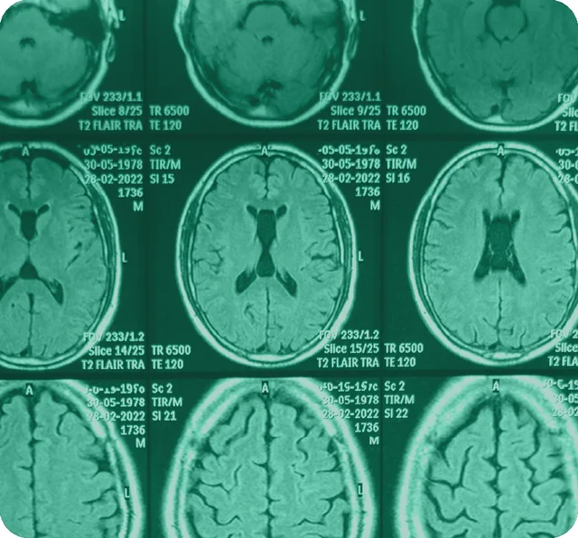

01 · Encefalo
Patologie cerebrali
Tumori cerebrali
Tumori benigni e maligni del sistema nervoso centrale, valutati in base al tipo e alla sede.
Patologie cerebrovascolari
Aneurismi, malformazioni artero-venose (MAV), cavernomi e ischemia cerebrale cronica.
Trauma cranico
Lesioni da trauma lieve, moderato o grave; in alcuni casi è necessario l'intervento chirurgico.